React 设计思想
译者序：本文是 React 核心开发者、有 React API 终结者之称的 Sebastian Markbåge 撰写，阐述了他设计 React 的初衷。阅读此文，你能站在更高的高度思考 React 的过去、现在和未来。原文地址：https://github.com/reactjs/react-basic
我写此文是想正式地阐述我心中 React 的心智模型。目的是解释为什么我们会这样设计 React，同时你也可以根据这些论点反推出 React。
不可否认，此文中的部分论据或前提尚存争议，而且部分示例的设计可能存在 bug 或疏忽。这只是正式确定它的最初阶段。如果你有更好的完善它的想法可以随时提交 pull request。本文不会介绍框架细节中的奇技淫巧，相信这样能提纲挈领，让你看清 React 由简单到复杂的设计过程。
React.js 的真实实现中充满了具体问题的解决方案，渐进式的解法，算法优化，历史遗留代码，debug 工具以及其他一些可以让它真的具有高可用性的内容。这些代码可能并不稳定，因为未来浏览器的变化和功能权重的变化随时面临改变。所以具体的代码很难彻底解释清楚。
我偏向于选择一种我能完全 hold 住的简洁的心智模型来作介绍。
1. 变换（Transformation）
设计 React 的核心前提是认为 UI 只是把数据通过映射关系变换成另一种形式的数据。同样的输入必会有同样的输出。这恰好就是纯函数。
1 | function NameBox(name) { |
2. 抽象（Abstraction）
你不可能仅用一个函数就能实现复杂的 UI。重要的是，你需要把 UI 抽象成多个隐藏内部细节，又可复用的函数。通过在一个函数中调用另一个函数来实现复杂的 UI，这就是抽象。
1 | function FancyUserBox(user) { |
3. 组合（Composition）
为了真正达到重用的特性，只重用叶子然后每次都为他们创建一个新的容器是不够的。你还需要可以包含其他抽象的容器再次进行组合。我理解的“组合”就是将两个或者多个不同的抽象合并为一个。
1 | function FancyBox(children) { |
4. 状态（State）
UI 不单单是对服务器端或业务逻辑状态的复制。实际上还有很多状态是针对具体的渲染目标。举个例子，在一个 text field 中打字。它不一定要复制到其他页面或者你的手机设备。滚动位置这个状态是一个典型的你几乎不会复制到多个渲染目标的。
我们倾向于使用不可变的数据模型。我们把可以改变 state 的函数串联起来作为原点放置在顶层。
1 | function FancyNameBox(user, likes, onClick) { |
注意：本例更新状态时会带来副作用（addOneMoreLike 函数中）。我实际的想法是当一个“update”传入时我们返回下一个版本的状态，但那样会比较复杂。此示例待更新
5. Memoization
对于纯函数，使用相同的参数一次次调用未免太浪费资源。我们可以创建一个函数的 memorized 版本，用来追踪最后一个参数和结果。这样如果我们继续使用同样的值，就不需要反复执行它了。
1 | function memoize(fn) { |
6. 列表（Lists）
大部分 UI 都是展示列表数据中不同 item 的列表结构。这是一个天然的层级。
为了管理列表中的每一个 item 的 state ，我们可以创造一个 Map 容纳具体 item 的 state。
1 | function UserList(users, likesPerUser, updateUserLikes) { |
注意：现在我们向 FancyNameBox 传了多个不同的参数。这打破了我们的 memoization 因为我们每次只能存储一个值。更多相关内容在下面。
7. 连续性（Continuations）
不幸的是，自从 UI 中有太多的列表，明确的管理就需要大量的重复性样板代码。
我们可以通过推迟一些函数的执行，进而把一些模板移出业务逻辑。比如，使用“柯里化”（JavaScript 中的 bind）。然后我们可以从核心的函数外面传递 state，这样就没有样板代码了。
下面这样并没有减少样板代码，但至少把它从关键业务逻辑中剥离。
1 | function FancyUserList(users) { |
8. State Map
之前我们知道可以使用组合避免重复执行相同的东西这样一种重复模式。我们可以把执行和传递 state 逻辑挪动到被复用很多的低层级的函数中去。
1 | function FancyBoxWithState( |
9. Memoization Map
一旦我们想在一个 memoization 列表中 memoize 多个 item 就会变得很困难。因为你需要制定复杂的缓存算法来平衡调用频率和内存占有率。
还好 UI 在同一个位置会相对的稳定。相同的位置一般每次都会接受相同的参数。这样以来，使用一个集合来做 memoization 是一个非常好用的策略。
我们可以用对待 state 同样的方式，在组合的函数中传递一个 memoization 缓存。
1 | function memoize(fn) { |
10. 代数效应（Algebraic Effects）
多层抽象需要共享琐碎数据时，一层层传递数据非常麻烦。如果能有一种方式可以在多层抽象中快捷地传递数据，同时又不需要牵涉到中间层级，那该有多好。React 中我们把它叫做“context”。
有时候数据依赖并不是严格按照抽象树自上而下进行。举个例子，在布局算法中，你需要在实现他们的位置之前了解子节点的大小。
现在，这个例子有一点超纲。我会使用 代数效应 这个由我发起的 ECMAScript 新特性提议。如果你对函数式编程很熟悉，它们 在避免由 monad 强制引入的仪式一样的编码。
1 | function ThemeBorderColorRequest() { } |
组件的生命周期（v16.4版本）
react 16版之前的生命周期函数
先来了解一下 react 16版之前的生命周期


- 初始化阶段：
- getDefaultProps:获取实例的默认属性
- getInitialState:获取每个实例的初始化状态
- componentWillMount：组件即将被装载、渲染到页面上
- render:组件在这里生成虚拟的 DOM 节点
- componentDidMount:组件真正在被装载之后
- 运行中状态：
- componentWillReceiveProps:组件将要接收到属性的时候调用
- shouldComponentUpdate:组件接受到新属性或者新状态的时候（可以返回 false，接收数据后不更新，阻止 render 调用，后面的函数不会被继续执行了）
- componentWillUpdate:组件即将更新不能修改属性和状态
- render:组件重新描绘
- componentDidUpdate:组件已经更新
- 销毁阶段：
- componentWillUnmount:组件即将销毁
getDefaultProps 和 getInitialState
getDefaultProps 函数的返回值可以作为 props 的初始值，这个函数只在 React.createClass 方法创造的组件类才会用到。
getInitialState 这个函数的返回值会用来初始化组件的 this.state，但是，这个方法只有用 React.createClass 方法创造的组件类才会发生作用。
假如我们用 React.createClass 定义一个组件 Sample，设定内部状态 foo 的初始值为字符串 bar，同时设定一个叫 sampleProp 的 prop 初始值为数字值 0，代码如下：
1 | const Sample = React.createClass({ |
实际上，getDefaultProps 和 getInitialState两个方法在 ES6 的方法定义的 React 组件根本不会用到。所以这里只作为了解。
其他16版之前的生命周期将会在下文的比较中讨论。

react 16.4版之后的生命周期函数
挂载
当组件实例被创建并插入 DOM 中时，其生命周期调用顺序如下：
constructor()static getDerivedStateFromProps()render()componentDidMount()
注意:
下述生命周期方法即将过时，在新代码中应该避免使用它们：
UNSAFE_componentWillMount()
更新
当组件的 props 或 state 发生变化时会触发更新。组件更新的生命周期调用顺序如下：
static getDerivedStateFromProps()shouldComponentUpdate()render()getSnapshotBeforeUpdate()componentDidUpdate()
注意:
下述方法即将过时，在新代码中应该避免使用它们：
UNSAFE_componentWillUpdate()UNSAFE_componentWillReceiveProps()
卸载
当组件从 DOM 中移除时会调用如下方法：
componentWillUnmount()
错误处理
当渲染过程，生命周期，或子组件的构造函数中抛出错误时，会调用如下方法：
static getDerivedStateFromError()componentDidCatch()
其他 APIs
组件还提供了一些额外的 API：
setState()forceUpdate()
class 属性
defaultPropsdisplayName
实例属性
propsstate
constructor()
1 | constructor(props) |
如果不初始化 state 或不进行方法绑定，则不需要为 React 组件实现构造函数。
在 React 组件挂载之前，会调用它的构造函数。在为 React.Component 子类实现构造函数时，应在其他语句之前前调用 super(props)。否则，this.props 在构造函数中可能会出现未定义的 bug。
通常，在 React 中，构造函数仅用于以下两种情况：
在 constructor() 函数中不要调用 setState() 方法。如果你的组件需要使用内部 state，请直接在构造函数中为 this.state 赋值初始 state：
1 | constructor(props) { |
只能在构造函数中直接为 this.state 赋值。如需在其他方法中赋值，你应使用 this.setState() 替代。
要避免在构造函数中引入任何副作用或订阅。如遇到此场景，请将对应的操作放置在 componentDidMount 中。
注意
避免将 props 的值复制给 state！这是一个常见的错误：
2
3
4
5
6
> super(props);
> // 不要这样做
> this.state = { color: props.color };
> }
>
如此做毫无必要（你可以直接使用
this.props.color），同时还产生了 bug（更新 prop 中的color时，并不会影响 state，因为挂载的生命周期函数只执行一次，只起到初始化的作用，没有更新的作用）。**只有在你刻意忽略 prop 更新的情况下使用。**此时，应将 prop 重命名为
initialColor或defaultColor。必要时，你可以修改它的key，以强制“重置”其内部 state。请参阅关于避免派生状态的博文，以了解出现 state 依赖 props 的情况该如何处理。
static getDerivedStateFromProps()
1 | static getDerivedStateFromProps(nextProps, prevState) |
getDerivedStateFromProps 从语义上理解是从更新后 props 中获取派生 state，它会在调用 render 方法之前调用，并且在初始挂载及后续更新时都会被调用。它应返回一个对象来更新 state，如果返回 null 则不更新任何内容。
此方法适用于罕见的用例，即 state 的值在任何时候都取决于 props。例如，实现 <Transition> 组件可能很方便，该组件会比较当前组件与下一组件，以决定针对哪些组件进行转场动画。
派生状态会导致代码冗余，并使组件难以维护。 确保你已熟悉这些简单的替代方案：
- 如果你需要执行副作用（例如，数据提取或动画）以响应 props 中的更改，请改用
componentDidUpdate。 - 如果只想在 prop 更改时重新计算某些数据，请使用 memoization helper 代替。
- 如果你想在 prop 更改时“重置”某些 state，请考虑使组件完全受控或使用
key使组件完全不受控 代替。
此方法无权访问组件实例，即这个函数不能通过 this 访问到class的属性，也并不推荐直接访问属性。而是应该通过参数提供的 nextProps 以及 prevState 来进行判断，根据新传入的props来映射到state。如果你需要，可以通过提取组件 props 的纯函数及 class 之外的状态，在getDerivedStateFromProps()和其他 class 方法之间重用代码。
请注意，不管原因是什么，都会在每次渲染前触发此方法。这与 UNSAFE_componentWillReceiveProps 形成对比，后者是如果父组件导致组件重新渲染，即使 props 没有更改，也会调用此方法。如果只想处理更改，请确保进行当前值与变更值的比较。
需要注意的是，如果props传入的内容不需要影响到你的state，那么就需要返回一个null，这个返回值是必须的，所以尽量将其写到函数的末尾。
关于适不适合使用派生 state，可以参考 你可能不需要使用派生 state
render()
1 | render() |
render() 方法是 class 组件中唯一必须实现的方法。
当 render 被调用时，它会检查 this.props 和 this.state 的变化并返回以下类型之一：
- React 元素。通常通过 JSX 创建。例如，
<div />会被 React 渲染为 DOM 节点，<MyComponent />会被 React 渲染为自定义组件，无论是<div />还是<MyComponent />均为 React 元素。 - 数组或 fragments。 使得 render 方法可以返回多个元素。欲了解更多详细信息，请参阅 fragments 文档。
- Portals。可以渲染子节点到不同的 DOM 子树中。欲了解更多详细信息，请参阅有关 portals 的文档
- 字符串或数值类型。它们在 DOM 中会被渲染为文本节点
- 布尔类型或 null。什么都不渲染。（主要用于支持返回
test && <Child />的模式，其中 test 为布尔类型。)
render() 函数应该为纯函数，这意味着在不修改组件 state 的情况下，每次调用时都返回相同的结果，并且它不会直接与浏览器交互。
如需与浏览器进行交互，请在 componentDidMount() 或其他生命周期方法中执行你的操作。保持 render() 为纯函数，可以使组件更容易思考。
注意
如果
shouldComponentUpdate()返回 false，则不会调用render()。
componentDidMount()
1 | componentDidMount() |
componentDidMount() 会在组件挂载后（插入 DOM 树中）立即调用。依赖于 DOM 节点的初始化应该放在这里。如需通过网络请求获取数据，此处是实例化请求的好地方。
这个方法是比较适合添加订阅的地方。如果添加了订阅，请不要忘记在 componentWillUnmount() 里取消订阅
你可以在 componentDidMount() 里可以直接调用 setState()。它将触发额外渲染，但此渲染会发生在浏览器更新屏幕之前。如此保证了即使在 render() 两次调用的情况下，用户也不会看到中间状态。请谨慎使用该模式，因为它会导致性能问题。通常，你应该在 constructor() 中初始化 state。如果你的渲染依赖于 DOM 节点的大小或位置，比如实现 modals 和 tooltips 等情况下，你可以使用此方式处理
shouldComponentUpdate()
1 | shouldComponentUpdate(nextProps, nextState) |
根据 shouldComponentUpdate() 的返回值，判断 React 组件的输出是否受当前 state 或 props 更改的影响。默认行为是 state 每次发生变化组件都会重新渲染。大部分情况下，你应该遵循默认行为。
当 props 或 state 发生变化时，shouldComponentUpdate() 会在渲染执行之前被调用。返回值默认为 true。首次渲染或使用 forceUpdate() 时不会调用该方法。
此方法仅作为性能优化的方式而存在。不要企图依靠此方法来“阻止”渲染，因为这可能会产生 bug。你应该考虑使用内置的 PureComponent 组件，而不是手动编写 shouldComponentUpdate()。PureComponent 会对 props 和 state 进行浅层比较，并减少了跳过必要更新的可能性。
如果你一定要手动编写此函数，可以将 this.props 与 nextProps 以及 this.state 与nextState 进行比较，并返回 false 以告知 React 可以跳过更新。请注意，返回 false 并不会阻止子组件在 state 更改时重新渲染。
我们不建议在 shouldComponentUpdate() 中进行深层比较或使用 JSON.stringify()。这样非常影响效率，且会损害性能。
目前，如果 shouldComponentUpdate() 返回 false，则不会调用 UNSAFE_componentWillUpdate()，render() 和 componentDidUpdate()。后续版本，React 可能会将 shouldComponentUpdate 视为提示而不是严格的指令，并且，当返回 false 时，仍可能导致组件重新渲染。
getSnapshotBeforeUpdate()
1 | getSnapshotBeforeUpdate(prevProps, prevState) |
getSnapshotBeforeUpdate() 在最近一次渲染输出（提交到 DOM 节点）之前调用。它使得组件能在发生更改之前从 DOM 中捕获一些信息（例如，滚动位置）。此生命周期的任何返回值将作为参数传递给 componentDidUpdate()。
此用法并不常见，但它可能出现在 UI 处理中，如需要以特殊方式处理滚动位置的聊天线程等。
应返回 snapshot 的值（或 null）。
例如：
1 | class ScrollingList extends React.Component { |
在上述示例中，重点是从 getSnapshotBeforeUpdate 读取 scrollHeight 属性，因为 “render” 阶段生命周期（如 render）和 “commit” 阶段生命周期（如 getSnapshotBeforeUpdate 和 componentDidUpdate）之间可能存在延迟。
componentDidUpdate()
1 | componentDidUpdate(prevProps, prevState, snapshot) |
componentDidUpdate() 会在更新后会被立即调用。首次渲染不会执行此方法。
当组件更新后，可以在此处对 DOM 进行操作。如果你对更新前后的 props 进行了比较，也可以选择在此处进行网络请求。（例如，当 props 未发生变化时，则不会执行网络请求）。
1 | componentDidUpdate(prevProps) { |
你也可以在 componentDidUpdate() 中直接调用 setState()，但请注意它必须被包裹在一个条件语件里，正如上述的例子那样进行处理，否则会导致死循环。它还会导致额外的重新渲染，虽然用户不可见，但会影响组件性能。不要将 props 直接赋给 state（官方：不要将 props “镜像”给 state），请考虑直接使用 props。 欲了解更多有关内容，请参阅为什么 props 复制给 state 会产生 bug。
如果组件实现了 getSnapshotBeforeUpdate() 生命周期（不常用），则它的返回值将作为 componentDidUpdate() 的第三个参数 “snapshot” 参数传递。否则此参数将为 undefined。
注意
如果
shouldComponentUpdate()返回值为 false，则不会调用componentDidUpdate()。
componentWillUnmount()
1 | componentWillUnmount() |
componentWillUnmount() 会在组件卸载及销毁之前直接调用。在此方法中执行必要的清理操作，例如，清除 timer，取消网络请求或清除在 componentDidMount() 中创建的订阅等。
componentWillUnmount() 中不应调用 setState()，因为该组件将永远不会重新渲染。组件实例卸载后，将永远不会再挂载它。
static getDerivedStateFromError()
1 | static getDerivedStateFromError(error) |
此生命周期会在后代组件抛出错误后被调用。 它将抛出的错误作为参数，并返回一个值以更新 state
1 | class ErrorBoundary extends React.Component { |
注意
getDerivedStateFromError()会在渲染阶段调用，因此不允许出现副作用。 如遇此类情况，请改用componentDidCatch()。
componentDidCatch()
1 | componentDidCatch(error, info) |
此生命周期在后代组件抛出错误后被调用。 它接收两个参数：
error—— 抛出的错误。info—— 带有componentStackkey 的对象，其中包含有关组件引发错误的栈信息。
componentDidCatch() 会在“提交”阶段被调用，因此允许执行副作用。 它应该用于记录错误之类的情况：
1 | class ErrorBoundary extends React.Component { |
注意
如果发生错误，你可以通过调用
setState使用componentDidCatch()渲染降级 UI，但在未来的版本中将不推荐这样做。 可以使用静态getDerivedStateFromError()来处理降级渲染。
过时的生命周期方法
以下生命周期方法标记为“过时”。这些方法仍然有效，但不建议在新代码中使用它们。参阅此博客文章以了解更多有关迁移旧版生命周期方法的信息。
UNSAFE_componentWillMount()
1 | UNSAFE_componentWillMount() |
注意
此生命周期之前名为
componentWillMount。该名称将继续使用至 React 17。可以使用rename-unsafe-lifecyclescodemod 自动更新你的组件。
UNSAFE_componentWillMount() 在挂载之前被调用。它在 render() 之前调用，因此在此方法中同步调用 setState() 不会触发额外渲染。通常，我们建议使用 constructor() 来初始化 state。
避免在此方法中引入任何副作用或订阅。如遇此种情况，请改用 componentDidMount()。
此方法是服务端渲染唯一会调用的生命周期函数。
UNSAFE_componentWillReceiveProps()
1 | UNSAFE_componentWillReceiveProps(nextProps) |
注意
此生命周期之前名为
componentWillReceiveProps。该名称将继续使用至 React 17。可以使用rename-unsafe-lifecyclescodemod 自动更新你的组件。
注意:
使用此生命周期方法通常会出现 bug 和不一致性：
- 如果你需要执行副作用（例如，数据提取或动画）以响应 props 中的更改，请改用
componentDidUpdate生命周期。- 如果你使用
componentWillReceiveProps仅在 prop 更改时重新计算某些数据，请使用 memoization helper 代替。- 如果你使用
componentWillReceiveProps是为了在 prop 更改时“重置”某些 state，请考虑使组件完全受控或使用key使组件完全不受控 代替。对于其他使用场景，请遵循此博客文章中有关派生状态的建议。
UNSAFE_componentWillReceiveProps() 会在已挂载的组件接收新的 props 之前被调用。如果你需要更新状态以响应 prop 更改（例如，重置它），你可以比较 this.props 和 nextProps 并在此方法中使用 this.setState() 执行 state 转换。
请注意，**如果父组件导致组件重新渲染，即使 props 没有更改，也会调用此方法。**如果只想处理更改，请确保进行当前值与变更值的比较。
在挂载过程中，React 不会针对初始 props 调用 UNSAFE_componentWillReceiveProps()。组件只会在组件的 props 更新时调用此方法。调用 this.setState() 通常不会触发 UNSAFE_componentWillReceiveProps()。
UNSAFE_componentWillUpdate()
1 | UNSAFE_componentWillUpdate(nextProps, nextState) |
注意
此生命周期之前名为
componentWillUpdate。该名称将继续使用至 React 17。可以使用rename-unsafe-lifecyclescodemod 自动更新你的组件。
当组件收到新的 props 或 state 时，会在渲染之前调用 UNSAFE_componentWillUpdate()。使用此作为在更新发生之前执行准备更新的机会。初始渲染不会调用此方法。
注意，你不能此方法中调用 this.setState()；在 UNSAFE_componentWillUpdate() 返回之前，你也不应该执行任何其他操作（例如，dispatch Redux 的 action）触发对 React 组件的更新
通常，此方法可以替换为 componentDidUpdate()。如果你在此方法中读取 DOM 信息（例如，为了保存滚动位置），则可以将此逻辑移至 getSnapshotBeforeUpdate() 中。
注意
如果
shouldComponentUpdate()返回 false，则不会调用UNSAFE_componentWillUpdate()。
参考
setState
setState()更新状态的2种写法
1). setState(updater, [callback]),
updater为返回stateChange对象的函数: (state, props) => stateChange
接收的state和props被保证为最新的
2). setState(stateChange, [callback])
stateChange为对象,
callback是可选的回调函数, 在状态更新且界面更新后才执行
3). 总结:
对象方式是函数方式的简写方式
如果新状态不依赖于原状态 ===> 使用对象方式
如果新状态依赖于原状态 ===> 使用函数方式
如果需要在setState()后获取最新的状态数据, 在第二个callback函数中读取
1 | <div id="example"></div> |
setState()更新状态是异步还是同步的?
1). 执行setState()的位置?
在react控制的回调函数中: 生命周期勾子 / react事件监听回调
非react控制的异步回调函数中: 定时器回调 / 原生事件监听回调 / promise回调 /…
2). 异步 OR 同步?
react相关回调中: 表现为“异步”
其它异步回调中: 同步
关于异步的setState()
1). 多次调用, 如何处理?
setState({}): 合并更新一次状态, 只调用一次render()更新界面 —状态更新和界面更新都合并了
setState(fn): 更新多次状态, 但只调用一次render()更新界面 —状态更新没有合并, 但界面更新合并了
2). 如何得到异步更新后的状态数据?
在setState()的callback回调函数中
1 | <div id="example"></div> |
setState()更新状态是异步还是同步的?
1). 执行setState()的位置?
在react控制的回调函数中: 生命周期勾子 / react事件监听回调
非react控制的异步回调函数中: 定时器回调 / 原生事件监听回调 / promise回调 /…
2). 异步 OR 同步?
react相关回调中: 异步
其它异步回调中: 同步
关于异步的setState()
1). 多次调用, 如何处理?
setState(fn): 更新多次状态, 但只调用一次render()更新界面 —状态更新没有合并, 但界面更新合并了
setState({}): 合并更新一次状态, 只调用一次render()更新界面 —状态更新和界面更新都合并了
2). 如何得到异步更新后的状态数据?
在setState()的callback回调函数中
1 | <script type="text/babel"> |
1 | <script type="text/babel"> |
PureComponent
-
Component存在的问题?
1). 父组件重新render(), 当前组件也会重新执行render(), 即使没有任何变化
2). 当前组件setState(), 重新执行render(), 即使state没有任何变化 -
解决Component存在的问题
1). 原因: 组件的componentShouldUpdate()默认返回true, 即使数据没有变化render()都会重新执行
2). 办法1: 重写shouldComponentUpdate(), 判断如果数据有变化返回true, 否则返回false
3). 办法2: 使用PureComponent代替Component
4). 说明: 一般都使用PureComponent来优化组件性能 -
PureComponent的基本原理
1). 重写实现shouldComponentUpdate()
2). 对组件的新/旧state和props中的数据进行浅比较, 如果都没有变化, 返回false, 否则返回true
3). 一旦componentShouldUpdate()返回false不再执行用于更新的render() -
面试题:
组件的哪个生命周期勾子能实现组件优化?
PureComponent的原理?
区别Component与PureComponent?
1 | <script type="text/babel"> |
列表 key 的问题
面试题:
1). react/vue中的key的作用/内部原理
2). 为什么列表的key尽量不要用index
-
虚拟DOM的key的作用?
1). 简单的说: key是虚拟DOM对象的标识, 在更新显示时key起着极其重要的作用
2). 详细的说: 当列表数组中的数据发生变化生成新的虚拟DOM后, React进行新旧虚拟DOM的diff比较
a. key没有变
item数据没变, 直接使用原来的真实DOM
item数据变了, 对原来的真实DOM进行数据更新
b. key变了
销毁原来的真实DOM, 根据item数据创建新的真实DOM显示(即使item数据没有变) -
key为index的问题
1). 添加/删除/排序 => 产生没有必要的真实DOM更新 ==> 界面效果没问题, 但效率低
2). 如果item界面还有输入框 => 产生错误的真实DOM更新 ==> 界面有问题
注意: 如果不存在添加/删除/排序操作, 用index没有问题 -
解决:
使用item数据的标识数据作为key, 比如id属性值 -
什么时候可以用index作为key
不能有: 添加/删除/排序
可以有: 更新元素内部的数据
1 | const time = Date.now() |
React 入门
1.1. React 的基本认识
1.1.1. 官网
-
英文官网: https://reactjs.org/
-
中文官网: https://doc.react-china.org/
1.1.2. 介绍描述 -
用于构建用户界面的 JavaScript 库(只关注于 View)
-
由 Facebook 开源
1.1.3. React 的特点 -
Declarative(声明式编码)
-
Component-Based(组件化编码)
-
Learn Once, Write Anywhere(支持客户端与服务器渲染)
-
高效
-
单向数据流
1.1.4. React 高效的原因 -
虚拟(virtual)DOM, 不总是直接操作 DOM
-
DOM Diff 算法, 最小化页面重绘
1.2. React 的基本使用
注意: 此时只是测试语法使用, 并不是真实项目开发使用
效果
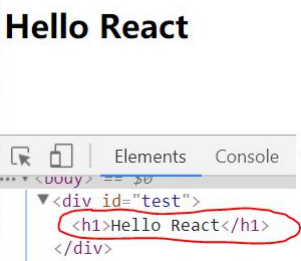
1.2.2. 相关 js 库
- react.js: React 的核心库
- react-dom.js: 提供操作 DOM 的 react 扩展库
- babel.min.js: 解析 JSX 语法代码转为纯 JS 语法代码的库
1.2.3. 在页面中导入 js
1 | <script type="text/javascript" src="../js/react.development.js"></script> |
1.2.4. 编码
1 | <script type="text/babel"> //必须声明 babel |
1.3. React JSX
1.3.1. 效果
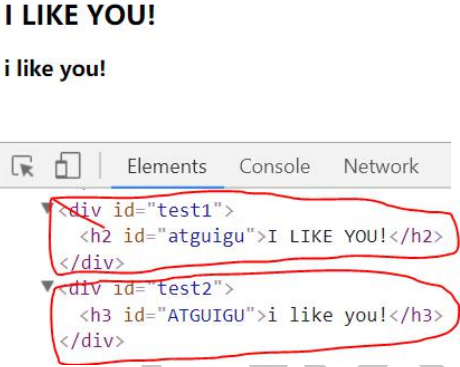
1 |
|
1.3.2. 虚拟 DOM
- React 提供了一些 API 来创建一种
特别的一般 js 对象
a. var element = React.createElement(‘h1’, {id:‘myTitle’},‘hello’)
b. 上面创建的就是一个简单的虚拟 DOM 对象 - 虚拟 DOM 对象最终都会被 React 转换为真实的 DOM
- 我们编码时基本只需要操作 react 的虚拟 DOM 相关数据, react 会转换为真实 DOM 变化而更新界面
1.3.3. JSX
-
全称: JavaScript XML
-
react 定义的一种类似于 XML 的 JS 扩展语法: XML+JS
-
作用: 用来创建 react 虚拟 DOM(元素)对象
a. var ele = Hello JSX!
b. 注意 1: 它不是字符串, 也不是 HTML/XML 标签
c. 注意 2: 它最终产生的就是一个 JS 对象
-
标签名任意: HTML 标签或其它标签
-
标签属性任意: HTML 标签属性或其它
-
基本语法规则
a. 遇到 <开头的代码, 以标签的语法解析: html 同名标签转换为 html 同名元素, 其它 标签需要特别解析
b. 遇到以 { 开头的代码，以 JS 语法解析: 标签中的 js 代码必须用{ }包含
- babel.js 的作用
a. 浏览器不能直接解析 JSX 代码, 需要 babel 转译为纯 JS 的代码才能运行
b. 只要用了 JSX，都要加上 type=“text/babel”, 声明需要 babel 来处理
1.3.4. 渲染虚拟 DOM(元素)
-
语法: ReactDOM.render(virtualDOM, containerDOM)
-
作用: 将虚拟 DOM 元素渲染到页面中的真实容器 DOM 中显示
-
参数说明
a. 参数一: 纯 js 或 jsx 创建的虚拟 dom 对象
b. 参数二: 用来包含虚拟 DOM 元素的真实 dom 元素对象(一般是一个 div)
1.3.5. 建虚拟 DOM 的 2 种方式
-
纯 JS(一般不用) React.createElement(‘h1’, {id:‘myTitle’}, title)
-
JSX:
<h1 id="myTitle">{title}</h1>
1.3.6. JSX 练习
需求: 动态展示列表数据
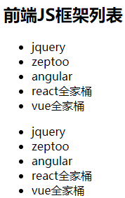
1 |
|
1.4. 模块与组件和模块化与组件化的理解
1.4.1. 模块
- 理解: 向外提供特定功能的 js 程序, 一般就是一个 js 文件
- 为什么: js 代码更多更复杂
- 作用: 复用 js, 简化 js 的编写, 提高 js 运行效率
1.4.2. 组件 - 理解: 用来实现特定(局部)功能效果的代码集合(html/css/js)
- 为什么: 一个界面的功能更复杂
- 作用: 复用编码, 简化项目编码, 提高运行效率
1.4.3. 模块化
当应用的 js 都以模块来编写的, 这个应用就是一个模块化的应用
1.4.4. 组件化
当应用是以多组件的方式实现, 这个应用就是一个组件化的应用
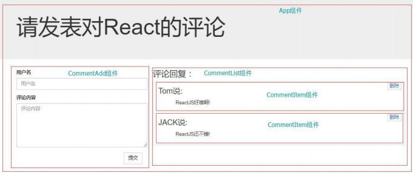
React 面向组件编程
2.1. 基本理解和使用
2.1.1. 效果
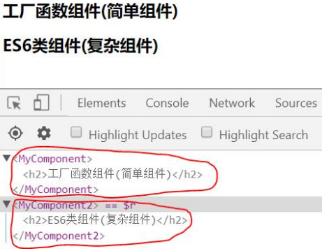
2.1.2. 自定义组件(Component) :
- 定义组件(2 种方式)
1 | /*方式 1: 工厂函数组件(简单组件)*/ |
- 渲染组件标签
1 | ReactDOM.render(<MyComponent />, document.getElementById('example1')) |
2.1.3. 注意
- 组件名必须首字母大写
- 虚拟 DOM 元素只能有一个根元素
- 虚拟 DOM 元素必须有结束标签
2.1.4. render()渲染组件标签的基本流程
- React 内部会创建组件实例对象
- 得到包含的虚拟 DOM 并解析为真实 DOM
- 插入到指定的页面元素内部
2.2. 组件三大属性 1: state
2.2.2. 理解
- state 是组件对象最重要的属性, 值是对象(可以包含多个数据)
- 组件被称为"状态机", 通过更新组件的 state 来更新对应的页面显示(重新渲染组件)
2.2.3. 编码操作 - 初始化状态:
1 | constructor (props) { |
- 读取某个状态值
1 | this.state.statePropertyName |
- 更新状态---->组件界面更新
1 | this.setState({ |
2.3. 组件三大属性 2: props
2.3.1. 效果
需求: 自定义用来显示一个人员信息的组件
1). 姓名必须指定
2). 如果性别没有指定, 默认为男
3). 如果年龄没有指定, 默认为 18
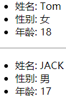
1 |
|
2.3.2. 理解
- 每个组件对象都会有 props(properties 的简写)属性
- 组件标签的所有属性都保存在 props 中
2.3.3. 作用 - 通过标签属性从组件外向组件内传递变化的数据
- 注意: 组件内部不要修改 props 数据
2.3.4. 编码操作 - 内部读取某个属性值
1 | this.props.propertyName |
- 对 props 中的属性值进行类型限制和必要性限制
1 | Person.propTypes = { |
-
扩展属性: 将对象的所有属性通过 props 传递
-
默认属性值
1 | Person.defaultProps = { name: 'Mary' } |
- 组件类的构造函数
1 | constructor (props) { |
2.3.5. 面试题
问题: 请区别一下组件的 props 和 state 属性
- state: 组件自身内部可变化的数据
- props: 从组件外部向组件内部传递数据, 组件内部只读不修改
2.4. 组件三大属性 3: refs 与事件处理
2.4.1. 效果
需求: 自定义组件, 功能说明如下:
- 点击按钮, 提示第一个输入框中的值
- 当第 2 个输入框失去焦点时, 提示这个输入框中的值
1 |
|
2.4.2. 组件的 3 大属性之二: refs 属性
- 组件内的标签都可以定义 ref 属性来标识自己
a. this.msgInput = input}/>
b. 回调函数在组件初始化渲染完或卸载时自动调用
2) 在组件中可以通过 this.msgInput 来得到对应的真实 DOM 元素
3) 作用: 通过 ref 获取组件内容特定标签对象, 进行读取其相关数据
2.4.3. 事件处理
- 通过 onXxx 属性指定组件的事件处理函数(注意大小写)
a. React 使用的是自定义(合成)事件, 而不是使用的原生 DOM 事件
b. React 中的事件是通过事件委托方式处理的(委托给组件最外层的元素) - 通过 event.target 得到发生事件的 DOM 元素对象
1 | handleFocus(event) { |
2.4.4. 强烈注意
- 组件内置的方法中的 this 为组件对象
- 在组件类中自定义的方法中 this 为 null
a. 强制绑定 this: 通过函数对象的 bind()
b. 箭头函数(ES6 模块化编码时才能使用)
2.5. 组件的组合
2.5.1. 效果
功能: 组件化实现此功能
- 显示所有 todo 列表
- 输入文本, 点击按钮显示到列表的首位, 并清除输入的文本
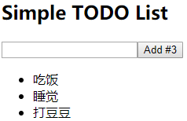
1 |
|
2.5.2. 功能界面的组件化编码流程(无比重要)
- 拆分组件: 拆分界面,抽取组件
- 实现静态组件: 使用组件实现静态页面效果
- 实现动态组件
a. 动态显示初始化数据
b. 交互功能(从绑定事件监听开始)
2.6. 收集表单数据
2.6.1. 效果
需求: 自定义包含表单的组件
- 输入用户名密码后, 点击登陆提示输入信息
- 不提交表单
1 | <!DOCTYPE html> |
2.6.2. 理解
- 问题: 在 react 应用中, 如何收集表单输入数据
- 包含表单的组件分类
a. 受控组件: 表单项输入数据能自动收集成状态
b. 非受控组件: 需要时才手动读取表单输入框中的数据
2.7. 组件生命周期
2.7.1. 效果
需求: 自定义组件
- 让指定的文本做显示/隐藏的渐变动画
- 切换持续时间为 2S
- 点击按钮从界面中移除组件界面
1 | <!DOCTYPE html> |
2.7.2. 理解
- 组件对象从创建到死亡它会经历特定的生命周期阶段
- React 组件对象包含一系列的勾子函数(生命周期回调函数), 在生命周期特定时刻回调
- 我们在定义组件时, 可以重写特定的生命周期回调函数, 做特定的工作
2.7.3. 生命周期流程图
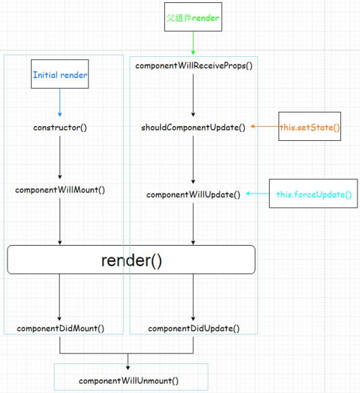
2.7.4. 生命周期详述
- 组件的三个生命周期状态:
- Mount：插入真实 DOM
- Update：被重新渲染
- Unmount：被移出真实 DOM
- React 为每个状态都提供了勾子(hook)函数
-
componentWillMount()
-
componentDidMount() * componentWillUpdate() * componentDidUpdate() * componentWillUnmount()
- 生命周期流程:
a. 第一次初始化渲染显示: ReactDOM.render()
-
constructor(): 创建对象初始化 state
-
componentWillMount() : 将要插入回调
-
render() : 用于插入虚拟 DOM 回调
-
componentDidMount() : 已经插入回调
b. 每次更新 state: this.setSate()
-
componentWillUpdate() : 将要更新回调
-
render() : 更新(重新渲染)
-
componentDidUpdate() : 已经更新回调
c. 移除组件: ReactDOM.unmountComponentAtNode(containerDom)
- componentWillUnmount() : 组件将要被移除回调
2.7.5. 重要的勾子
- render(): 初始化渲染或更新渲染调用
- componentDidMount(): 开启监听, 发送 ajax 请求
- componentWillUnmount(): 做一些收尾工作, 如: 清理定时器
- componentWillReceiveProps(): 后面需要时讲
2.8. 虚拟 DOM 与 DOM Diff 算法
2.8.1. 效果
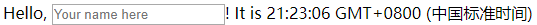
1 |
|
2.8.2. 基本原理图
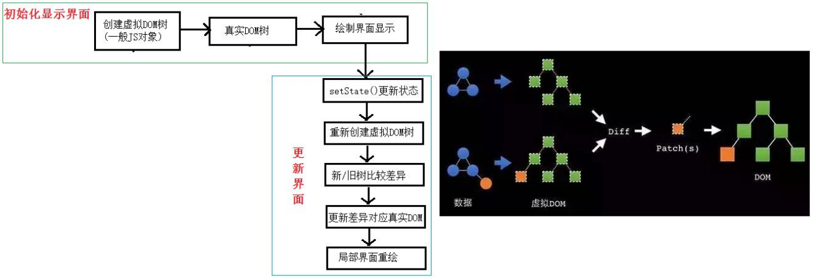
react 应用(基于 react 脚手架)
3.1. 使用 create-react-app 创建 react 应用
3.1.1. react 脚手架
- xxx 脚手架: 用来帮助程序员快速创建一个基于 xxx 库的模板项目
a. 包含了所有需要的配置
b. 指定好了所有的依赖
c. 可以直接安装/编译/运行一个简单效果 - react 提供了一个用于创建 react 项目的脚手架库: create-react-app
- 项目的整体技术架构为: react + webpack + es6 + eslint
- 使用脚手架开发的项目的特点: 模块化, 组件化, 工程化
3.1.2. 创建项目并启动
1 | npm install -g create-react-app |
3.1.3. react 脚手架项目结构
1 | ReactNews |
3.2. demo: 评论管理
3.2.1. 效果
示例代码：https://github.com/cheungww/React_practice/tree/master/react_demo
3.2.2. 拆分组件
应用组件: App
- state: comments/array
添加评论组件: CommentAdd - state: username/string, content/string * props: add/func
评论列表组件: CommentList * props: comment/object, delete/func, index/number
评论项组件: CommentItem - props: comments/array, delete/func
3.2.3. 实现静态组件
3.2.4. 实现动态组件
动态展示初始化数据
- 初始化状态数据
- 传递属性数据
响应用户操作, 更新组件界面
- 绑定事件监听, 并处理
- 更新 state
react ajax
4.1. 理解
4.1.1. 前置说明
- React 本身只关注于界面, 并不包含发送 ajax 请求的代码
- 前端应用需要通过 ajax 请求与后台进行交互(json 数据)
- react 应用中需要集成第三方 ajax 库(或自己封装)
4.1.2. 常用的 ajax 请求库 - jQuery: 比较重, 如果需要另外引入不建议使用
- axios: 轻量级, 建议使用
a. 封装 XmlHttpRequest 对象的 ajax
b. promise 风格
c. 可以用在浏览器端和 node 服务器端 - fetch: 原生函数, 但老版本浏览器不支持
a. 不再使用 XmlHttpRequest 对象提交 ajax 请求
b. 为了兼容低版本的浏览器, 可以引入兼容库 fetch.js
4.1.3. 效果
需求:
- 界面效果如下
- 根据指定的关键字在 github 上搜索匹配的最受关注的库
- 显示库名, 点击链接查看库
- 测试接口: https://api.github.com/search/repositories?q=r&sort=stars
4.2. axios
4.2.1. 文档
https://github.com/axios/axios
4.2.2. 相关 API
- GET 请求
1 | axios.get('/user?ID=12345') |
4.3. Fetch
4.3.1. 文档
- https://github.github.io/fetch/
- https://segmentfault.com/a/1190000003810652
4.3.2. 相关 API - GET 请求
1 | fetch(url).then(function(response) { |
- POST 请求
1 | fetch(url, { |
4.4. demo: github users
4.4.1. 效果
示例代码：https://github.com/cheungww/React_practice/tree/master/react_demo
4.4.2. 拆分组件
App
- state: searchName/string
Search
- props: setSearchName/func
List
- props: searchName/string * state: firstView/bool, loading/bool, users/array, errMsg/string
4.4.3. 编写静态组件
4.4.4. 编写动态组件
componentWillReceiveProps(nextProps): 监视接收到新的 props, 发送 ajax 使用 axios 库发送 ajax 请求
几个重要技术总结
5.1. 组件间通信
5.1.1. 方式一: 通过 props 传递
- 共同的数据放在父组件上, 特有的数据放在自己组件内部(state)
- 通过 props 可以传递一般数据和函数数据, 只能一层一层传递
- 一般数据–>父组件传递数据给子组件–>子组件读取数据
- 函数数据–>子组件传递数据给父组件–>子组件调用函数
5.1.2. 方式二: 使用消息订阅(subscribe)-发布(publish)机制 - 工具库: PubSubJS
- 下载: npm install pubsub-js --save
- 使用:
1 | import PubSub from 'pubsub-js' //引入 |
5.1.3. 方式三: redux
后面专门讲解
5.2. 事件监听理解
5.2.1. 原生 DOM 事件
- 绑定事件监听
a. 事件名(类型): 只有有限的几个, 不能随便写
b. 回调函数
2) 触发事件
a. 用户操作界面
b. 事件名(类型)
c. 数据()
5.2.2. 自定义事件(消息机制)
- 绑定事件监听
a. 事件名(类型): 任意
b. 回调函数: 通过形参接收数据, 在函数体处理事件 - 触发事件(编码)
a. 事件名(类型): 与绑定的事件监听的事件名一致
b. 数据: 会自动传递给回调函数
5.3. ES6 常用新语法
- 定义常量/变量: const/let
- 解构赋值: let {a, b} = this.props import {aa} from ‘xxx’ 3) 对象的简洁表达: {a, b}
- 箭头函数:
a. 常用场景
- 组件的自定义方法: xxx = () => {}
- 参数匿名函数
b. 优点:
-
简洁
-
没有自己的 this,使用引用 this 查找的是外部 this
- 扩展(三点)运算符: 拆解对象(const MyProps = {}, )
- 类: class/extends/constructor/super
- ES6 模块化: export default | import
react-router4
6.1. 相关理解
6.1.1. react-router 的理解
- react 的一个插件库
- 专门用来实现一个 SPA 应用
- 基于 react 的项目基本都会用到此库
6.1.2. SPA 的理解
- 单页 Web 应用（single page web application，SPA）
- 整个应用只有一个完整的页面
- 点击页面中的链接不会刷新页面, 本身也不会向服务器发请求
- 当点击路由链接时, 只会做页面的局部更新
- 数据都需要通过 ajax 请求获取, 并在前端异步展现
6.1.3. 路由的理解
- 什么是路由?
a. 一个路由就是一个映射关系(key:value)
b. key 为路由路径, value 可能是 function/component - 路由分类
a. 后台路由: node 服务器端路由, value 是 function, 用来处理客户端提交的请求并返回一个响应数据
b. 前台路由: 浏览器端路由, value 是 component, 当请求的是路由 path 时, 浏览器端前没有发送 http 请求, 但界面会更新显示对应的组件
3) 后台路由
a. 注册路由: router.get(path, function(req, res))
b. 当 node 接收到一个请求时, 根据请求路径找到匹配的路由, 调用路由中的函数来处理请求, 返回响应数据
4) 前端路由
a. 注册路由:
b. 当浏览器的 hash 变为#about 时, 当前路由组件就会变为 About 组件
6.1.4. 前端路由的实现
-
history 库
a. 网址: https://github.com/ReactTraining/history
b. 管理浏览器会话历史(history)的工具库
c. 包装的是原生 BOM 中 window.history 和 window.location.hash -
history API
a. History.createBrowserHistory(): 得到封装 window.history 的管理对象
b. History.createHashHistory(): 得到封装 window.location.hash 的管理对象
c. history.push(): 添加一个新的历史记录
d. history.replace(): 用一个新的历史记录替换当前的记录
e. history.goBack(): 回退到上一个历史记录
f. history.goForword(): 前进到下一个历史记录
g. history.listen(function(location){}): 监视历史记录的变化 -
测试
1 |
|
6.2. react-router 相关 API
6.2.1. 组件
<BrowserRouter><HashRouter><Route><Redirect><Link><NavLink><Switch>
6.2.2. 其它- history 对象
- match 对象
- withRouter 函数
6.3. 基本路由使用
6.3.1. 效果
6.3.2. 准备
- 下载 react-router: npm install --save react-router@4
- 引入 bootstrap.css:
6.3.3. 路由组件: views/about.jsx
1 | import React from 'react' |
6.3.4. 路由组件: views/home.jsx
1 | import React from 'react' |
6.3.5. 包装 NavLink 组件: components/my-nav-link.jsx
1 | import React from 'react' |
6.3.6. 应用组件: components/app.jsx
1 | import React from 'react' |
6.3.7. 自定义样式: index.css
1 | .activeClass { |
6.3.8. 入口 JS: index.js
1 | import React from 'react' |
6.4. 嵌套路由使用
6.4.1. 效果
6.4.2. 二级路由组件: views/news.jsx
1 | import React from 'react' |
6.4.3. 二级路由组件: views/message.jsx
1 | import React from 'react' |
6.4.4. 一级路由组件: views/home.jsx
1 | import React from 'react' |
6.5. 向路由组件传递参数数据
6.5.1. 效果
6.5.2. 三级路由组件: views/message-detail.jsx
1 | import React from 'react' |
6.5.3. 二级路由组件: views/message.jsx
1 | import React from 'react' |
6.6. 多种路由跳转方式
6.6.1. 效果
6.6.2. 二级路由: views/message.jsx
1 | import React from 'react' |
react-ui
7.1. 最流行的开源 React UI 组件库
7.1.1. material-ui(国外)
- 官网: http://www.material-ui.com/#/
- github: https://github.com/callemall/material-ui
7.1.2. ant-design(国内蚂蚁金服) - PC 官网: https://ant.design/index-cn
- 移动官网: https://mobile.ant.design/index-cn
- Github: https://github.com/ant-design/ant-design/
- Github: https://github.com/ant-design/ant-design-mobile/
7.2. ant-design-mobile 使用入门
7.2.1. 效果
7.2.2. 使用 create-react-app 创建 react 应用
1 | npm install create-react-app -g |
7.2.3. 搭建 antd-mobile 的基本开发环境
- 下载
1 | npm install antd-mobile --save |
- src/App.jsx
1 | import React, { Component } from 'react' |
- src/index.js
1 | import React from 'react'; |
- index.html
1 | <meta name="viewport" content="width=device-width, initial-scale=1, maximum-scale=1, |
7.2.4. 实现按需打包(组件 js/css)
- 下载依赖包
1 | yarn add react-app-rewired --dev |
- 修改默认配置:
-
package.json
1
2
3
4
5"scripts": {
"start": "react-app-rewired start",
"build": "react-app-rewired build",
"test": "react-app-rewired test --env=jsdom"
} -
config-overrides.js
1
2
3
4
5
6const {injectBabelPlugin} = require('react-app-rewired');
module.exports = function override(config, env) {
config = injectBabelPlugin(['import', {libraryName: 'antd-mobile', style: 'css'}],
config);
return config;
};
- 编码
1 | // import 'antd-mobile/dist/antd-mobile.css' |
redux
8.1. redux 理解
8.1.1. 学习文档
- 英文文档: https://redux.js.org/
- 中文文档: http://www.redux.org.cn/
- Github: https://github.com/reactjs/redux
8.1.2. redux 是什么? - redux 是一个独立专门用于做状态管理的 JS 库(不是 react 插件库)
- 它可以用在 react, angular, vue 等项目中, 但基本与 react 配合使用
- 作用: 集中式管理 react 应用中多个组件共享的状态
8.1.3. redux 工作流程
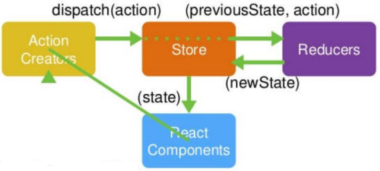
8.1.4. 什么情况下需要使用 redux
- 总体原则: 能不用就不用, 如果不用比较吃力才考虑使用
- 某个组件的状态，需要共享
- 某个状态需要在任何地方都可以拿到
- 一个组件需要改变全局状态
- 一个组件需要改变另一个组件的状态
8.2. redux 的核心 API
8.2.1. createStore()
- 作用:
创建包含指定 reducer 的 store 对象 - 编码:
1 | import {createStore} from 'redux' |
8.2.2. store 对象
- 作用: redux 库最核心的管理对象
- 它内部维护着:
state
reducer - 核心方法:
getState()
dispatch(action)
subscribe(listener) - 编码:
store.getState()
store.dispatch({type:‘INCREMENT’, number})
store.subscribe(render)
8.2.3. applyMiddleware()
- 作用:
应用上基于 redux 的中间件(插件库) - 编码:
1 | import {createStore, applyMiddleware} from 'redux' |
8.2.4. combineReducers()
- 作用:
`合并多个 reducer 函数 - 编码:
1 | export default combineReducers({ |
8.3. redux 的三个核心概念
8.3.1. action
- 标识要执行行为的对象
- 包含 2 个方面的属性
a. type: 标识属性, 值为字符串, 唯一, 必要属性
b. xxx: 数据属性, 值类型任意, 可选属性 - 例子:
1 | const action = { |
- Action Creator(创建 Action 的工厂函数)
1 | const increment = (number) => ({type: 'INCREMENT', data: number}) |
8.3.2. reducer
- 根据老的 state 和 action, 产生新的 state 的纯函数
- 样例
1 | export default function counter(state = 0, action) { |
- 注意
a. 返回一个新的状态
b. 不要修改原来的状态
8.3.3. store
- 将 state,action 与 reducer 联系在一起的对象
- 如何得到此对象?
1 | import {createStore} from 'redux' |
- 此对象的功能?
getState(): 得到 state
dispatch(action): 分发 action, 触发 reducer 调用, 产生新的 state
subscribe(listener): 注册监听, 当产生了新的 state 时, 自动调用
8.4. 使用 redux 编写应用
8.4.1. 效果
8.4.2. 下载依赖包
npm install --save redux
8.4.3. redux/action-types.js
1 | /* |
redux/actions.js
1 | /* |
8.4.5. redux/reducers.js
1 | /*根据老的 state 和指定 action, 处理返回一个新的 state |
8.4.6. components/app.jsx
1 | /*应用组件 |
8.4.7. index.js
1 | import React from 'react' |
8.4.8. 问题
- redux 与 react 组件的代码耦合度太高
- 编码不够简洁
8.5. react-redux
8.5.1. 理解
- 一个 react 插件库
- 专门用来简化 react 应用中使用 redux
8.5.2. React-Redux 将所有组件分成两大类
- UI 组件
a. 只负责 UI 的呈现，不带有任何业务逻辑
b. 通过 props 接收数据(一般数据和函数)
c. 不使用任何 Redux 的 API
d. 一般保存在 components 文件夹下 - 容器组件
a. 负责管理数据和业务逻辑，不负责 UI 的呈现
b. 使用 Redux 的 API
c. 一般保存在 containers 文件夹下
8.5.3. 相关 API - Provider
1 | // 让所有组件都可以得到 state 数据 |
- connect()
1 | 用于包装 UI 组件生成容器组件 |
- mapStateToprops()
1 | // 将外部的数据（即 state 对象）转换为 UI 组件的标签属性 |
- mapDispatchToProps()
将分发 action 的函数转换为 UI 组件的标签属性
简洁语法可以直接指定为 actions 对象或包含多个 action 方法的对象
8.5.4. 使用 react-redux
- 下载依赖包
1 | npm install --save react-redux |
- redux/action-types.js
不变 - redux/actions.js
不变 - redux/reducers.js
不变 - components/counter.jsx
1 | /* |
- containters/app.jsx
1 | /*包含 Counter 组件的容器组件 |
- index.js
1 | import React from 'react' |
8.5.5. 问题
- redux 默认是不能进行异步处理的, 2) 应用中又需要在 redux 中执行异步任务(ajax, 定时器)
8.6. redux 异步编程
8.6.1. 下载 redux 插件(异步中间件)
1 | npm install --save redux-thunk |
8.6.2. index.js
1 | import {createStore, applyMiddleware} from 'redux' |
8.6.3. redux/actions.js
1 | // 异步 action creator(返回一个函数) |
8.6.4. components/counter.jsx
1 | incrementAsync = () => { |
8.6.5. containers/app.jsx
1 | import {increment, decrement, incrementAsync} from '../redux/actions' |
8.7. 使用上 redux 调试工具
8.7.1. 安装 chrome 浏览器插件
1 | redux-devtools |
8.7.2. 下载工具依赖包
1 | npm install --save-dev redux-devtools-extension |
8.7.3. 编码
1 | import { composeWithDevTools } from 'redux-devtools-extension' |
8.8. 相关重要知识: 纯函数和高阶函数
8.8.1. 纯函数
- 一类特别的函数: 只要是同样的输入，必定得到同样的输出
- 必须遵守以下一些约束
a. 不得改写参数
b. 不能调用系统 I/O 的 API
c. 能调用 Date.now()或者 Math.random()等不纯的方法 - reducer 函数必须是一个纯函数
8.8.2. 高阶函数
4) 理解: 一类特别的函数
a. 情况 1: 参数是函数
b. 情况 2: 返回是函数
- 常见的高阶函数:
a. 定时器设置函数
b. 数组的 map()/filter()/reduce()/find()/bind()
c. react-redux 中的 connect 函数 - 作用:
a. 能实现更加动态, 更加可扩展的功能